Abstract
Many robotic construction applications, such as progress tracking, require registering a sensor trajectory to a prior 2D floor plan. Visual capture is attractive for its low cost and availability, but aligning a visual simultaneous localization and mapping (VSLAM) map to a floor plan is difficult; VSLAM recovers geometry only up to an unknown similarity transform, the sparse point cloud is cross-modal to the symbolic floor plan, sites are only partially built during capture, and construction sites are visually repetitive, degrading map quality while removing distinctive features. Existing methods address at most two of these challenges. We thus introduce Reading the Room (RR), a global-local approach to register scale-ambiguous, sparse, semantic VSLAM maps to partially built floor plans. Our key idea is to define a single robust, differentiable, class-balanced semantic-geometric energy function that governs all stages of the pipeline. We develop two global initialization schemes, leveraging a single inaccurate user-provided correspondence if provided, or estimating the initialization globally using a cross-modal matching network. Both schemes are designed to find initial candidates with respect to the energy function, which is then directly optimized for local refinement. We evaluate RR on 33 sequences across three active construction sites against classical and learning-based baselines, achieving a 4.5× improvement in mean absolute trajectory error over the strongest baseline in the general unconstrained setting, which increases to 7.6× when an anchor is provided.
Method
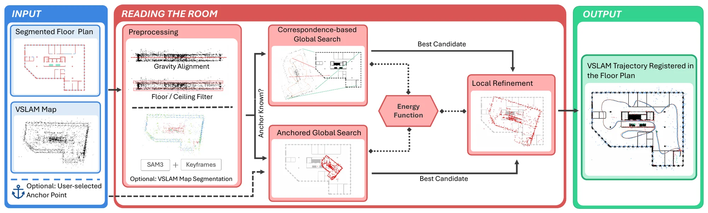
Preprocessing
Gravity is estimated with PCA on the landmark cloud. Floor and ceiling points are removed (keeping the 15th–85th height percentiles), and the rest is projected to a bird's-eye view. This reduces the problem from Sim(3) to Sim(2): scale s, rotation θ and translation (tx, ty). If the map has no labels, landmarks are labelled wall / window / stairs by projecting them into keyframes segmented with SAM3.
One energy function
A candidate transform is scored by how close each landmark lands to plan structure of its own class, using a pre-computed per-class distance transform. Residuals are truncated at τ, so clutter and unbuilt structure can't dominate. They're Huber-penalized so gradients stay informative, and averaged per class so that rare but distinctive classes like stairs count as much as walls:
The landmarks are scored against the plan, but not the other way around. That way, walls that haven't been built yet are never penalized for having no landmarks.
Global initialization
Anchored
A site manager taps one rough point on the plan. Translation is pinned around it, and 20,000 random scale/rotation candidates are scored with the energy. An inaccurate anchor is fine: the robust cost absorbs the error.
Correspondence-based
With no user input, RoMa (initialized from MatchAnything) is fine-tuned on 2,000 synthetic map–plan pairs generated from 100 drawings. Two-point Umeyama fits on its top matches give the candidates. They're ranked by the energy, not by RANSAC inlier count.
Local refinement
The best candidate is refined jointly over (s, θ, tx, ty) with L-BFGS, using the closed-form gradient of the same energy function.
Demonstrations
Results on Real Construction Sites
One representative sequence per site, in increasing order of difficulty. Pick a site to compare the inputs with the strongest learning-based baseline and with both variants of our method. Click any image to enlarge it.
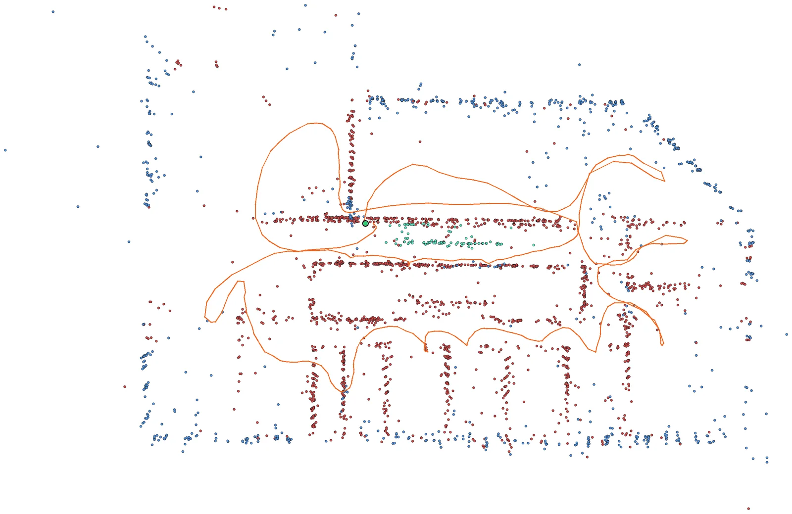
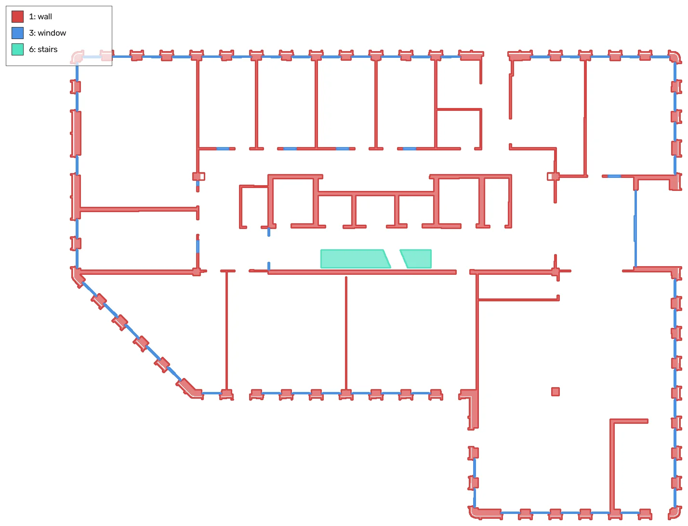
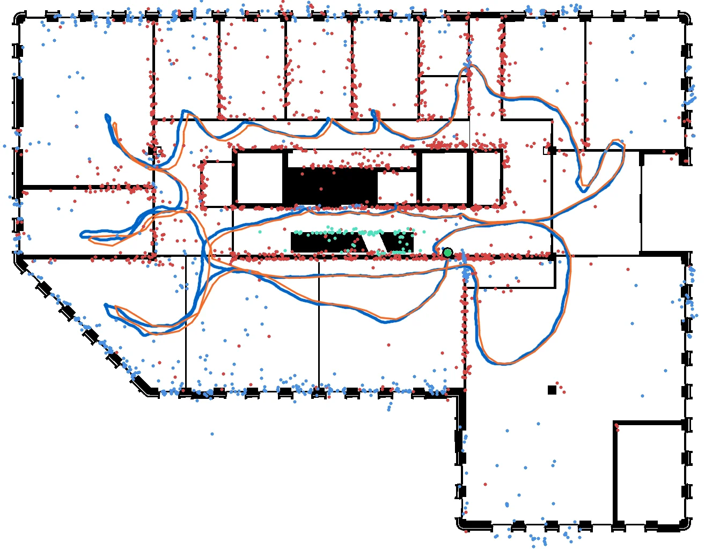
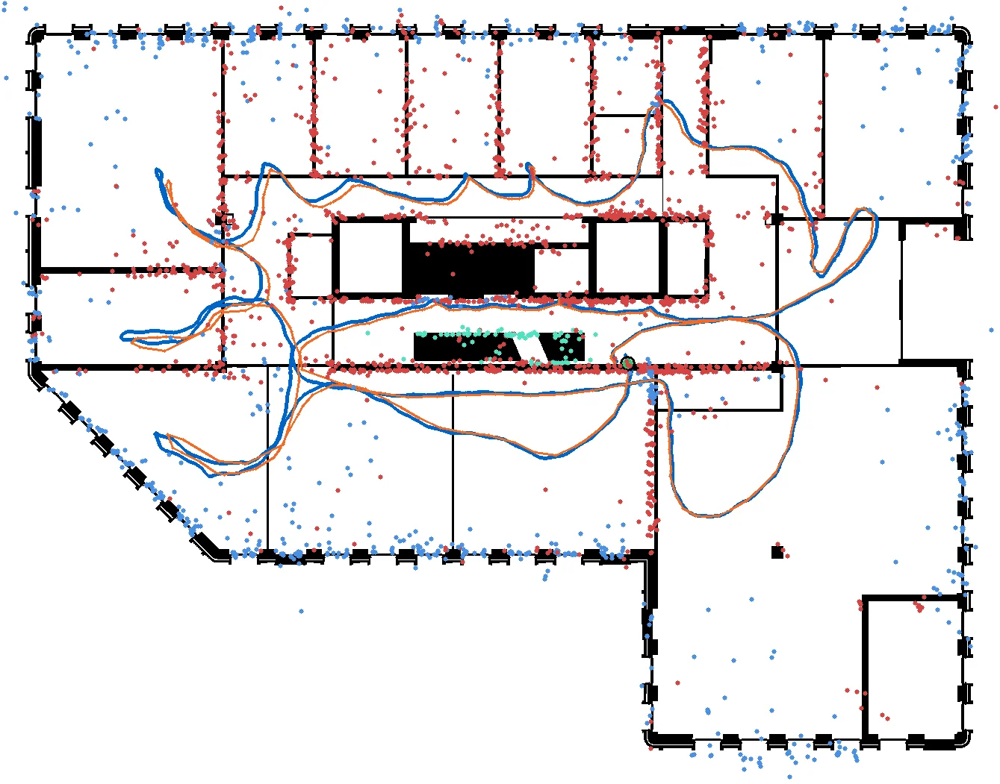
Small floors, high coverage and a distinctive layout. All three methods recover a similar trajectory on this sequence, but across the site's 19 sequences our energy-based initialization and refinement reduce the median error by about 6×.
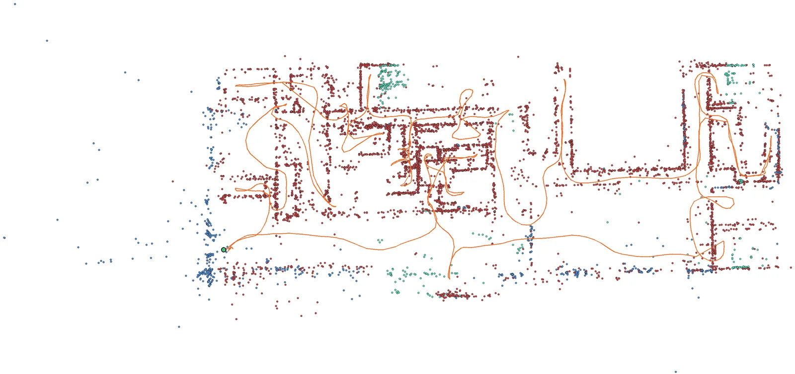
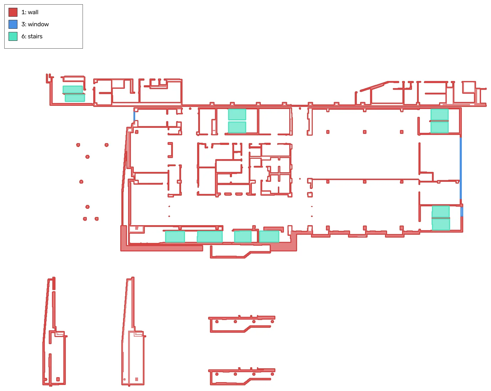
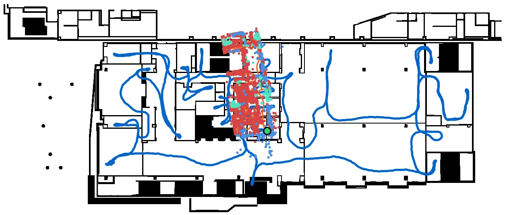
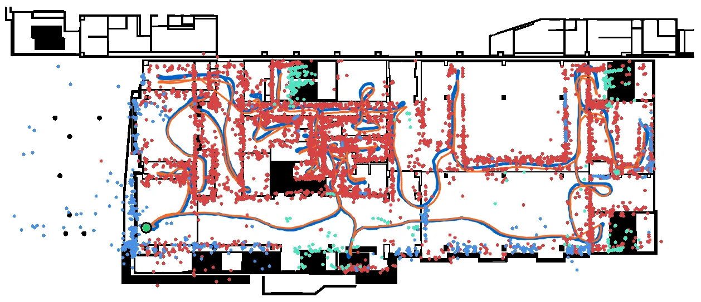
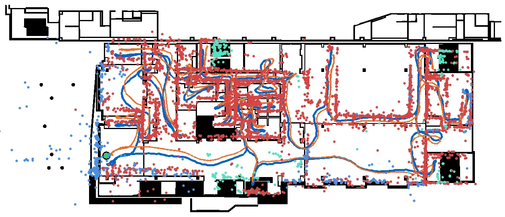
Self-similar rooms. The baseline collapses the whole map into a few small rooms: the outer walls line up with room walls, which is a low-cost but wrong answer that only arises because scale is unknown. Our method is the only one that succeeds on this site.
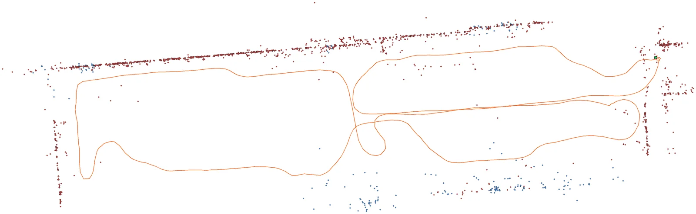
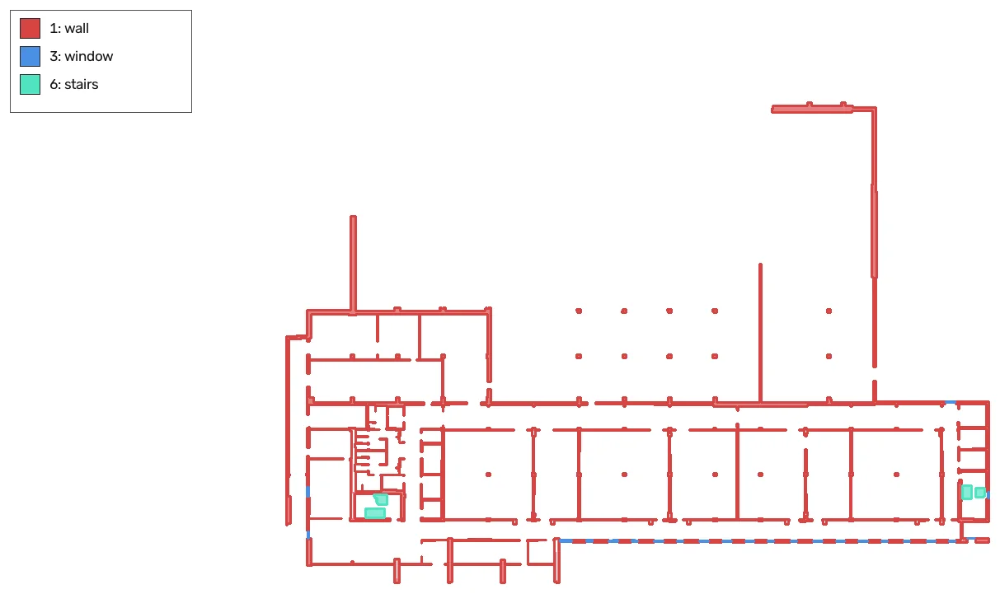
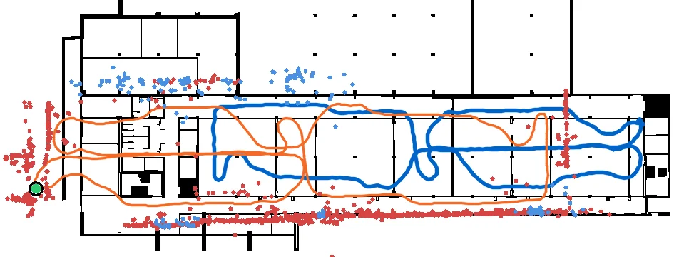
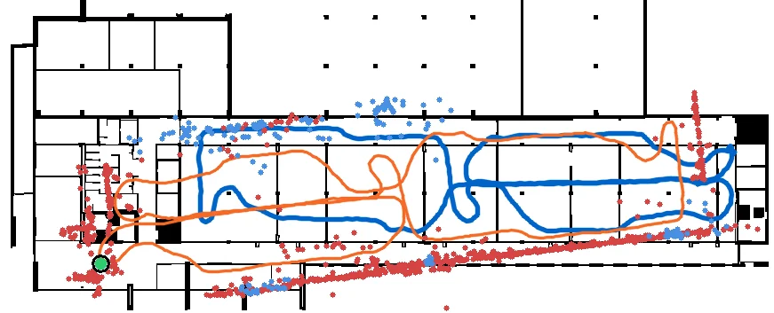
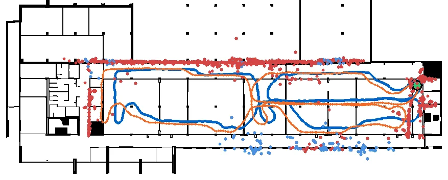
Huge floors, only 29% covered, and a symmetric layout. Both automatic methods register the map flipped by 180°. A single rough anchor resolves the symmetry, and our method then recovers a good alignment despite the scale and rotation ambiguity.
VSLAM trajectory ground-truth trajectory wall window stairs
Quantitative Results
Absolute trajectory error (ATE in metres, lower is better) and recall, the percentage of sequences with ATE below 1/3/5 m (higher is better), over all 33 sequences. Best result per setting in bold.
| Method | Site A | Site B | Site C | Overall | ||||
|---|---|---|---|---|---|---|---|---|
| Med. ATE↓ | R@5m↑ | Med. ATE↓ | R@5m↑ | Med. ATE↓ | R@5m↑ | Mean / Med. ATE↓ | R@1/3/5m↑ | |
| Oracle (lower bound) | 1.01 | 100.0 | 0.85 | 100.0 | 0.26 | 100.0 | 1.12 / 0.85 | 60.6 / 93.9 / 100.0 |
| Unconstrained (no anchor) | ||||||||
| SIFT + RANSAC* | – | – | 53.80 | 0.0 | – | – | 53.80 / 53.80 | 0.0 / 0.0 / 0.0 |
| RoMa + MatchAnything | 16.12 | 31.6 | 42.41 | 0.0 | 42.44 | 0.0 | 25.58 / 19.94 | 6.1 / 15.2 / 18.2 |
| Shahbandi & Magnusson† | 18.18 | 0.0 | 44.99 | 0.0 | – | – | 29.57 / 24.94 | 0.0 / 0.0 / 0.0 |
| Reading the Room (ours) | 2.67 | 68.4 | 1.92 | 71.4 | 35.04 | 0.0 | 14.82 / 4.34 | 21.2 / 45.5 / 54.5 |
| With a single user-marked anchor | ||||||||
| ICP + anchor | 15.72 | 10.5 | 26.31 | 0.0 | 38.77 | 0.0 | 24.26 / 21.59 | 0.0 / 3.0 / 6.1 |
| Semantic ICP + anchor | 13.40 | 26.3 | 11.23 | 14.3 | 37.60 | 0.0 | 20.23 / 14.43 | 0.0 / 6.1 / 18.2 |
| Reading the Room (ours) + anchor | 1.41 | 89.5 | 0.90 | 85.7 | 4.37 | 57.1 | 4.46 / 1.89 | 18.2 / 63.6 / 81.8 |
* SIFT failed on 32 of the 33 runs; the one successful run (Site B) is shown. † Produced a valid transform on 10 of the 33 runs (none on Site C), so its metrics cover only those runs. The oracle fits the VSLAM trajectory directly to the ground truth. Its residual reflects the drift remaining in the VSLAM map, and no rigid registration can do better. Per-site mean ATE and ablation studies are in the paper.
Paper
BibTeX
@article{stragier2026reading,
title = {Reading the Room: Scale-ambiguous Semantic Registration of Sparse VSLAM Maps to Floor Plans in Partially Built Environments},
author = {Stragier, Bjorn and Szyma{\'n}ska, Emilia and Prendergast, J. Micah and Schmid, Lukas Rosenberger},
journal = {arXiv preprint arXiv:2610.29647},
year = {2026}
}